정보통신기사(구) (2017-09-23 기출문제)
1과목: 디지털 전자회로
1. 다음은 트랜지스터 직렬전압안정회로를 나타내었다. 부하전압을 5[V]로 유지하기 위한 제너다이오드의 항복전압은 얼마인가? (단, 트랜지스터의 베이스-이미터 전압 VBE=0.7[V]이고, 입력전압 Vin=10[V]~20[V]까지 변한다고 가정한다.)
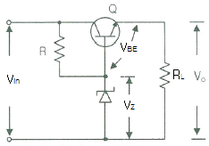
- 5[V]
- 5.7[V]
- 10[V]
- 10.5[V]
(정답률: 79%)

2. 정류회로 중 평활회로에서 커패시터 입력형에 비해 인덕터 입력형의 특성으로 옳은 것은?
- 최대 역전압(Peak Inverse Voltage)이 높다.
- 소전류에 적합하다.
- 전압변동률이 양호하다.
- 출력직류전압이 크다.
(정답률: 54%)
3. 공통 베이스(Common Base) 증폭기 회로에서 컬렉터 전류가 4.9[mA]이고, 이미터 전류가 5[mA]이었을 때 직류전류 증폭률은?
- 0.98
- 1.02
- 1.27
- 1.31
(정답률: 71%)
4. B급 푸시풀 증폭기의 최대 직류공급전력은? (단, Im은 최대 콜렉터 전류, Vcc는 공급 전압이다.)
- ImVcc
- 2ImVcc
- ImVcc/π
- 2ImVcc/π
(정답률: 64%)
5. 다음 B급 SEPP(Single-Ended Push-Pull) 증폭기에서 트랜지스터 1개당 최대 전력 손실은 약 몇 [W]인가?
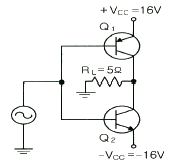
- 1.5[W]
- 2.5[W]
- 3.5[W]
- 4.5[W]
(정답률: 57%)
6. 다음 중 드레인 접지형 FET 증폭기에 대한 특성으로 틀린 것은? (단, FET의 파라미터 Am은 상호 전도도이다.)
- 입력 임피던스는 매우 크다.
- 전압 이득은 약 1이다.
- 출력은 입력과 역위상이다.
- 출력 임피던스는 약 1/Am이다.
(정답률: 72%)
7. 정궤환(Positive Feedback)을 사용하는 발진회로에서 발진을 위한 궤환루프(Feedback Loop)의 조건은?
- 궤환루프의 이득은 없고, 위상천이가 180°이다.
- 궤환루프의 이득은 1보다 작고, 위상천이가 90°이다.
- 궤환루프의 이득은 1이고, 위상천이는 0°이다.
- 궤환루프의 이득은 1보다 크고, 위상천이는 180°이다.
(정답률: 79%)
8. 다음 그림과 같은 발진회로에서 높은 주파수의 동작에 적절한 발진회로 구현을 위한 리액턴스 조건은 무엇인가?
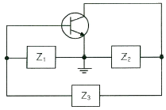
- Z1 = 용량성, Z2 = 용량성, Z3 = 용량성
- Z1 = 유도성, Z2 = 유도성, Z3 = 유도성
- Z1 = 유도성, Z2 = 용량성, Z3 = 용량성
- Z1 = 용량성, Z2 = 용량성, Z3 = 유도성
(정답률: 85%)
9. 다음 중 변조과정에 대한 설명으로 옳은 것은?
- 반송파에 정보신호(음성,화상,데이터 등)를 싣는 것을 변조라 한다.
- 변조된 높은 주파수의 파를 반송파라 한다.
- 변조는 소신호로 대전류를 제어하는 것이다.
- 저주파는 음성 신호파를 운반하는 역할을 하므로 피변조파라 한다.
(정답률: 81%)
10. 다음 중 불연속 펄스 변조방식의 종류가 아닌 것은?
- PAM(Pulse Amplitude Modulation)
- PNM(Pulse Number Modulation)
- ⊿M(Delta Modulation)
- PCM(Pulse Code Modulation)
(정답률: 56%)
11. 다음 중 반송파를 제거하는 변조방식은?
- 진폭 변조
- 펄스 변조
- 위상 변조
- 평형 변조
(정답률: 60%)
12. BPSK(Binary Phase Shift Keying) 변조방식의 에러확률은 QPSK(Quadrature Phase Shift Keying) 변조방식의 에러 확률의 몇배인가?
- 1/2배
- 1/4배
- 2배
- 4배
(정답률: 69%)
13. 다음 그림과 같은 회로의 명칭은?
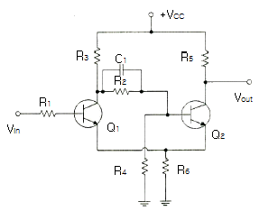
- 슈미트 트리거(Schmitt Trigger) 회로
- 차동증폭회로
- 푸시풀(Push-Pull) 증폭회로
- 부트스트랩(Bootstrap) 회로
(정답률: 76%)
14. 다음 그림과 같은 주기적인 펄스파형의 듀티비(DutyRatio)는 얼마인가? (단, t0 30[㎲], T = 150[㎲])
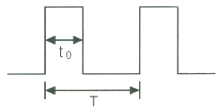
- 10[%]
- 12[%]
- 20[%]
- 22[%]
(정답률: 83%)
15. 8진수 (67)8 을 16진수로 바르게 표기한 것은?
- (43)16
- (37)16
- (31)16
- (25)16
(정답률: 82%)
16. 다음 중 2-out of-5 Code에 해당하지 않는 것은?
- 10010
- 11000
- 10001
- 11001
(정답률: 83%)
17. 불 대수식
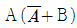
를 간단히 하면?- A
- B
- AB
- A+B
(정답률: 78%)
18. 카운터(Counter)를 이용하여 컨베이어 벨트를 통과하는 생산품의 개수를 파악하려고 한다. 최대 500개의 생산품 개수를 계산하기 위한 카운터를 플립플롭을 이용하여 제작할 경우 최소한 몇 개의 플립플롭이 필요한가?
- 5
- 7
- 9
- 11
(정답률: 85%)
19. 다음 그림과 같은 회로의 명칭은?
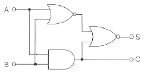
- 동시회로
- 반동시회로
- Full Adder
- Half Adder
(정답률: 77%)
20. 다음 소자 중에서 n개의 입력을 받아서 제어 신호에 의해 그 중 1개만을 선택하여 출력하는 것은?
- Multiplexer
- Demultiplexer
- Encoder
- Decoder
(정답률: 78%)
2과목: 정보통신 시스템
21. 다음 중 국내 ITS용으로 할당된 주파수 대역이 아닌 것은?
- 5.795 ~ 5.815[GHz]
- 5.850 ~ 5.925[GHz]
- 5.835 ~ 5.895[GHz]
- 5.125 ~ 5.145[GHz]
(정답률: 73%)
22. 다음 중 가상회선 교환 방식의 설명으로 알맞지 않은 것은?
- 데이터 전송은 연결 설정, 데이터 전송, 연결 해제 세 단계로 이루어진다.
- 전송할 데이터는 패킷으로 분할되어 전송된다.
- 연결이 설정되고 나면 모든 패킷은 동일한 경로를 따라 전송된다.
- 각 패킷마다 상이한 경로가 설정된다.
(정답률: 76%)
23. 교환국 수가 n일 때 메쉬형(그물형) 통신망의 중계 회선수는?
- n
- n(n-1)/2
- n/2
- n-1
(정답률: 91%)
24. 다음 중 제4세대 이동통신서비스에 가장 가까운 기술규격은?
- Wibro
- WiFi
- LTE
- Bluetooth
(정답률: 90%)
25. LAN에 사용되는 프로토콜 계층 구조로 올바른 것은? (LLC : Logical Link Control, MAC : Medium Access Control)
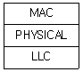
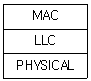
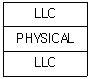
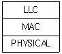
(정답률: 80%)
26. 다음 중 전송계층의 주요 기능은?
- 동기화
- 프로세스 대 프로세스 전달
- 노드 대 노드 전달
- 라우팅 테이블의 생성과 유지
(정답률: 79%)
27. 프로토콜의 구성요소 중 '통신 할 신호들의 실제 의미'란 뜻으로 상호협상과 오류처리에 대한 제어정보 등이 포함되어 있는 것은?
- 의미(Semantics)
- 구문(Syntax)
- 동기(Timing)
- 포맷(Format)
(정답률: 85%)
28. 다음 중 ITU-T에 관한 내용과 거리가 먼 것은?
- CCITT의 후신이다.
- 전기통신일반에 관한 표준을 제정한다.
- 무선 통신시스템에 관한 표준을 제정한다.
- 전화 및 데이터 통신시스템에 관한 표준을 제정한다.
(정답률: 66%)
29. 다음 중 통신 프로토콜의 특성으로 알맞지 않은 것은?
- 두 개체 사이의 통신 방법은 직접 통신과 간접 통신방법이 있다.
- 프로토콜은 단일 구조 또는 계층적 구조로 구성될 수 있다.
- 프로토콜을 대칭적이거나 비대칭적일 수 있다.
- 프로토콜은 반드시 표준이어야 한다.
(정답률: 79%)
30. 교환기의 과금처리 방식 중 하나인 중앙집중처리방식(CAMA)에 대한 설명으로 틀린 것은?
- 다수의 교환국망일 때 유리하다.
- 신뢰성이 좋은 전용선이 필요하다.
- 유지보수에 많은 시간이 소요된다.
- 과금센터 구축에 큰 경비가 들어간다.
(정답률: 71%)
31. 다음 중 LAN에서 베이스밴드의 장점이 아닌 것은?
- 가격이 저렴하다.
- 아날로그신호 전송이 가능하다.
- 단순하여 설치와 유지가 쉽다.
- 전파지연이 짧다.
(정답률: 62%)
32. 전화통신망(PSTN)의 교환기와 교환기 사이에 제어신호 전달에 사용되는 전송규격은?
- SIP
- MGCP
- H.323
- No.7 신호방식
(정답률: 65%)
33. AM 통신방식과 비교하여 FM 통신방식의 특징으로 옳지 않은 것은?
- 수신기에서 진폭 제한기의 사용으로 잡음이 제거되며 S/N 비가 좋아진다.
- 수신측에 진폭제한기와 자동이득조절장치를 적용하여 페이딩 영향이 크다.
- 송·수신기가 복잡해 진다.
- 스켈치 회로가 있어 입력신호가 없거나 적을 시 내부 잡음을 억제한다.
(정답률: 68%)
34. 다음 중 발신지에서 목적지까지 인터네트워크를 경유하여 정보를 전송중계하는 장치는?
- 라우터
- 리피터
- 허브
- 브리지
(정답률: 78%)
35. 다음 중 변조의 필요성에 대한 설명으로 옳지 않은 것은?
- 전송 중에 발생하는 간섭과 잡음을 줄이기 위함이다.
- 송·수신용 안테나 길이를 늘리기 위함이다.
- 다중 통신을 하기 위함이다.
- 전송 효율의 향상을 위함이다.
(정답률: 86%)
36. 다음 이동통신망 구성 장비 중 대형장애가 동시에 발생 시 처리의 우선순위가 가장 낮은 시스템은 무엇인가?
- MSC
- HLR
- BSC
- BTS
(정답률: 78%)
37. 대칭키 암호화 방식을 사용하여 4명이 통신을 한다고 할 때, 4명이 서로 간 비밀통신을 하기 위해 필요한 비밀키의 수는?
- 4
- 6
- 8
- 10
(정답률: 85%)
38. 다음 중 방화벽의 설명으로 가장 알맞은 것은?
- 방화벽은 해킹 등 외부의 불법적인 침입으로부터 내부를 보호하는 역할을 한다.
- 방화벽은 네트워크나 시스템에서 일어나는 행위를 관찰하고 정상적이지 않은 행위에 대해 탐지하는 역할을 한다.
- 방화벽은 침입차단 시스템, IPS, VPN 등 다양한 종류의 보안 솔루션을 하나로 모은 통합보안관리 시스템이다.
- 방화벽은 공중망을 사설망처럼 이용할 수 있도록 사이트 양단간 암호화 통신을 지원하는 장치이다.
(정답률: 84%)
39. 다음 중 정보통신시스템 유지보수 활동의 유형에 해당되지 않는 것은?
- 준공 시 정보통신시스템 성능의 유지관리
- 잘못된 것을 수정하는 유지보수
- 시스템 구축을 위한 유지보수
- 장애발생 예방을 위한 유지보수
(정답률: 68%)
40. 정보통신 시스템의 하드웨어 설계 시 고려사항이 아닌것은?
- 운용, 유지 보수 및 관리
- 설치면적 확보
- 신뢰성
- 전기적 및 물리적 성능
(정답률: 76%)
3과목: 정보통신 기기
41. 다음 중 2개의 전극(Anode와 Cathode) 사이에 삽입된 유기물 층에 전기장을 가해 발광하게 되는 것은?
- CRT
- OLED
- PDP
- TET-LCD
(정답률: 87%)
42. Zigbee 네트워크 내에서 반드시 하나만 존재하며, 네트워크 정보의 초기화를 담당하는 것은 무엇인가?
- 코디네이터(Coordinator)
- 라우터(Router)
- 게이트웨이(Gateway)
- 단말장치(Data Terminal)
(정답률: 82%)
43. DOCSIS(Data Over Cable Service Interface Specifications)라는 표준 인터페이스 규격을 활용하는 단말은?
- 케이블 모뎀
- 휴대폰
- 스마트 패드
- 유선 일반전화기
(정답률: 87%)
44. 다음 중 지방과 지방, 국가와 국가, 국가와 대륙, 전세계에 걸쳐 형성되는 통신망으로 지리적으로 멀리 떨어져 있는 넓은 지역을 연결하는 통신망은 무엇인가?
- PAN
- LAN
- MAN
- WAN
(정답률: 87%)
45. 다음 중 단말기에서 모뎀으로 데이터를 보내기 위한 신호는 무엇인가?
- RTS(Request To Send)
- CTS(Clear To Send)
- DCE(Data Circuit Equipment)
- DSR(Data Set Request)
(정답률: 75%)
46. 다음 중 HUB에 대한 설명으로 옳은 것은?
- 구내 정보통신망(LAN)과 단말장치를 접속하는 장치이다.
- 구내 정보통신망(LAN)과 외부 네트워크를 연결하여 다중경로를 제어하는 장치이다.
- 개방형접속표준(OSI 7)에서 제5계층의 기능을 담당하는 장치이다.
- 아날로그 선로상의 신호를 분배, 접속하는 중계장치이다.
(정답률: 76%)
47. 다음 중 집중화기에 대한 설명으로 옳지 않은 것은?
- m개의 입력 회선을 n개의 출력 회선으로 집중화하는 장비이다.
- 집중화기에 구성 요소로는 단일 회선 제어기, 다수 선로제어기 등이 있다.
- 집중화기는 정적인 방법(Static Method)의 공동 이용을 행한다.
- 부 채널의 전송속도의 합은 Link 채널의 전송속도보다 크거나 같다.
(정답률: 74%)
48. 다음 중 LAN 장비에서 네트워크계층의 연결장비인 것은?
- Router
- Bridge
- Repeater
- Hub
(정답률: 82%)
49. 다음 중 ATSC 영상방식에서 채용한 오류정정 부호화 과정이 아닌 것은?
- 데이터 랜덤화
- 리드 솔로몬 부호화
- 격자 부호화
- 터보 부호화
(정답률: 65%)
50. IPTV 서비스의 데이터 전송방식으로 가장 많이 쓰이는 방식은?
- 유니캐스트(Unicast)
- 멀티캐스트(Multicast)
- 브로드캐스트(Broadcast)
- 애니캐스트(Anycast)
(정답률: 77%)
51. IPTV 서비스의 구성요소 중 보기의 설명에 대한 것으로 적절한 것은?
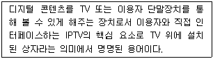
- 셋탑박스
- 인코더
- 헤드엔드
- 방송소스
(정답률: 90%)
52. 다음 중 CATV의 헤드엔드(Head End)의 주요 기능이 아닌것은?
- 채널 변환
- 신호 분리 및 혼합
- 옥내 분배
- 신호 송출
(정답률: 74%)
53. 트래픽 단위에서 180[HCS]는 몇 얼랑(Erlang)인가?
- 3[Erl]
- 4[Erl]
- 5[Erl]
- 6[Erl]
(정답률: 71%)
54. 다음 중 정지궤도 위성에 대한 설명으로 옳지 않은 것은?(오류 신고가 접수된 문제입니다. 반드시 정답과 해설을 확인하시기 바랍니다.)
- 정지궤도란 적도상공 약 36,000[km]를 말한다.
- 궤도가 높을수록 위성이 지국를 한 바퀴 도는 시간이 길어진다.
- 극지방 관측이 불가능하다.
- 정지궤도에 있는 통신위성에서는 지구면적의 약 20[%]가 내려다 보인다.
(정답률: 79%)
55. 다음 중 이동전화망의 위치등록 장치인 HLR(Home Location Register)의 기능이 아닌 것은?
- 등록인식
- 위치확인
- 채널할당
- 단말기 정보확인
(정답률: 74%)
56. 다음 중 AM수신기의 감도를 향상시키기 위한 방법으로 틀린것은?
- 주파수 변환회로의 변환 컨덕턴스(Conductance)가 큰 것을 사용한다.
- 초단 증폭기의 잡음이 작은 것을 사용한다.
- 중간 주파수 증폭기의 대역폭을 넓게 한다.
- 안테나 결합회로 및 각 증폭단의 이득을 크게 한다.
(정답률: 74%)
57. 다음 중 비디오텍스의 구성장치에 해당하지 않는 것은?
- 입력장치
- 정보축적장치
- 통신처리장치
- 트랜스폰더
(정답률: 74%)
58. 다음 중 멀티미디어 응용분야와 가장 거리가 먼 것은?
- 원격회의
- 원격교육
- 원격진료
- 원격검색
(정답률: 89%)
59. 다음 중 문자나 그림으로 구성된 화상 정보가 축적되어 있는 데이터 베이스로부터 TV수상기와 전화회선을 이용하여 사용자가 원하는 각종 정보를 제공하는 것은?
- 쌍방향 CATV
- VRS(Video Response System)
- 팩시밀리
- 비디오텍스
(정답률: 70%)
60. 어느 멀티미디어 기기의 전송대역폭이 6[MHz]이고 전송속도가 19.39[Mbps]일 때, 이 기기의 대역폭 효율값은 약 얼마인가?
- 2.23
- 3.23
- 5.25
- 6.42
(정답률: 88%)
4과목: 정보전송 공학
61. 시분할 다중화 방식에서 채널간의 상호간섭을 방지하기 위하여 사용되는 시간 간격을 무엇이라 하는가?
- 가드 밴드(Guard Band)
- 버퍼(Buffer)
- 가드 타임(Guard Time)
- 부호화 타임(Coding Time)
(정답률: 77%)
62. 다음 중 이동통신이나 위성통신에서 사용되는 무선 다원접속(Radio Multiple Access)방식에 해당되지 않는 것은?
- FDMA
- TDMA
- CDMA
- WDMA
(정답률: 73%)
63. 다음 중 표본화 주파수가 높은 경우를 적절하게 표현한 것은?
- 초당 샘플수가 낮다.
- 전송하려는 정보의 양이 적다.
- 요구되는 채널 용량이 커진다.
- 초당 프레임수가 낮다.
(정답률: 83%)
64. 다음 중 정보신호에 따라 펄스 반송파의 폭을 변화시키는 펄스변조방식은?
- PDM
- PAM
- PPM
- PCM
(정답률: 61%)
65. 스넬의 법칙(Snell's law)이란 광선 또는 전파가 서로 다른 매질의 경계면에 입사하여 통과할 때 입사각과 굴적각과의 관계를 표현한 법칙이다. 다음 그림과 같이 굴절률이 n1과 n2로 서로 다른 두 매질이 맞닿아 있을 때 매질을 통과하는 빛의 경로는 매질마다 광속이 다르므로 휘게되는데, 그 휜 정도를 빛의 입사 평면상에서 각도로 표시하면 θ1과 θ2가 된다. 이때 스넬의 법칙으로 n1, n2, θ1, θ2의 상관관계를 올바르게 정의한 것은?
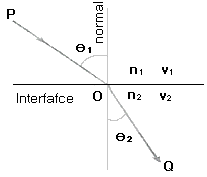
- n1+cosθ1=n2+sinθ2
- n1+cosθ2=n2+sinθ2
- n1(sinθ1)=n2(sinθ2)
- n1(sinθ2)=n2(sinθ1)
(정답률: 79%)
66. 중계케이블의 통화전압이 55[V]이고 잡음전압이 0.⑤5[V]이면 잡음 레벨[dB]은?
- 44[dB]
- 50[dB]
- 55[dB]
- 60[dB]
(정답률: 75%)
67. 다음 중 동선과 비교할 때 동축케이블의 장점이 아닌 것은?
- 용량이 커서 많은 신호를 한번에 전송한다.
- 케이블 간의 신호 간섭을 억제한다.
- 주파수 신호세력의 감쇠나 전송지연의 변화가 적다.
- 선로구축 비용이 저렴하다.
(정답률: 76%)
68. 전송로의 정적인 불완전성은 시스템의 특성에 의해 발생되는 왜곡인데 이와 관계가 없는 것은?
- 진폭 감쇠 왜곡
- 지연 왜곡
- 특성 왜곡
- 대칭 왜곡
(정답률: 67%)
69. 다음 문장의 괄호 안에 들어갈 내용으로 알맞은 것은?
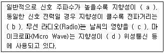
- (a) 크며 (b) 멀고 (c) 받으며 (d) 크므로
- (a) 크며 (b) 짧고 (c) 안받으며 (d) 작으므로
- (a) 작으며 (b) 멀고 (c) 받으며 (d) 크므로
- (a) 작으며 (b) 짧고 (c) 안받으며 (d) 작으므로
(정답률: 83%)
70. 다음 중 다량의 데이터를 고속 전송하는 컴퓨터와 주변장치 간에 사용되는 방식은?
- 단방향 전송
- 직교 전송
- 반이중 전송
- 병렬 전송
(정답률: 79%)
71. 다음 중 동기식 전송방식의 특징으로 옳은 것은?
- 사용단말기가 버퍼기능이 있어야 하며 장비가 복잡하다.
- 전송문자마다 앞에 시작비트와 뒤에 정지비트를 지닌다.
- 전송속도는 보통 1,800[bps] 이하로 사용한다.
- 전송문자 사이에 일정하지 않은 휴지 간격(Idle Time)이 존재한다.
(정답률: 58%)
72. 다음 중 비동기 전송방식에서 문자를 해독해 처리하고 다음 문자를 수신할 수 있도록 준비시간을 할애하기 위한 목적의 비트는?
- 패리티 비트(Parity Bit)
- 데이터 비트(Data Bit)
- 시작 비트(Start Bit)
- 정지 비트(Stop Bit)
(정답률: 67%)
73. 다음 중 비동기 전송방식의 특징이 아닌 것은?
- 저속도의 EIA-232D데이터 전송에 주로 사용
- 긴 데이터 비트 열을 연속적으로 전송하는 방식
- 수신기가 각각 새로운 문자의 시작점에서 재동기를 수행
- 매 문자마다 Start, Stop 비트를 부가하여 전송
(정답률: 61%)
74. 다음 중 IP주소가 B Class이고, 전체를 하나의 네트워크망으로 사용 하고자 할 때 적절한 서브넷 마스크 값은?
- 255.0.0.0
- 255.255.0.0
- 255.255.255.0
- 255.255.255.255
(정답률: 81%)
75. 다음 중 서브넷 마스크(Subnet Mask)의 목적이 아닌것은?
- 네트워크 ID 축소
- 네트워크의 부하 감소
- 네트워크의 논리적인 분할
- 네트워크 ID와 호스트 ID의 구분
(정답률: 69%)
76. 다음 중 고속 LAN으로 대학캠퍼스나 공장같이 한 곳에 모여 있는 LAN들을 연결하는데 주로 사용되는 것은?
- FDDI
- ASK
- QAM
- FSK
(정답률: 84%)
77. 다음 중 VLAN 트렁킹(Trunking)에 대한 설명으로 틀린것은?
- 복수개의 VLAN Frame을 전송할 수 있는 링크를 트렁크(Trunk)라고 하고, 특정 포트를 Trunk Port로 동작시키는 것을 트렁킹(Trunking)이라 한다.
- Trunk Port를 통해 Frame을 전송할 때는 Frame이 속하는 VLAN번호를 표시해 주어야 한다.
- Trunking Protocol은 Access Mode로 연결된 디바이스 사이에서만 동작한다.
- Trunking Protocol은 IEEE 802.1Q와 시스코에서 개발한 ISL(Inter Switch Link)이 있다.
(정답률: 63%)
78. 다음 중 전송제어 절차에서 주국이 수행하는 임무로 맞는 것은?
- 제어국 이외의 국을 나타낸다.
- 데이터를 보내는 국을 나타낸다.
- 데이터를 받는 국을 나타낸다.
- 데이터의 상태 감시, 제어, 에러 복구를 수행하는 국을 나타낸다.
(정답률: 64%)
79. 짝수 패리티 비트의 해밍코드로 0011011을 받았을 때(왼쪽에 있는 비트부터 수신됨), 오류가 정정된 정확한 코드는 무엇인가?
- 0111011
- 0011000
- 0101010
- 0011001
(정답률: 75%)
80. 종속국(Slave)에서 주국(Master) 방향으로 데이터를 전송하기 위한 동작과 주국이 종속국으로 데이터를 전송하기 위한 동작을 알맞게 짝지은 것은?
- Polling, Selecting
- Polling, Routing
- Contention, Routing
- Contention, Polling
(정답률: 82%)
5과목: 전자계산기일반 및 정보통신설비기준
81. 다음 중 오류검출과 오류교정까지도 가능한 코드는?
- Hamming Code
- Biquinary Code
- 2-out of-5 Code
- EBCDIC Code
(정답률: 87%)
82. 다음 지문이 설명하고 있는 것은?
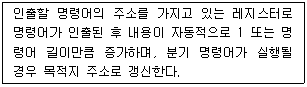
- 기억장치 버퍼 레지스터
- 누산기
- 프로그램 카운터
- 명령 레지스터
(정답률: 73%)
83. 다음 지문의 괄호 안에 들어갈 용어를 올바르게 나열할 것은?
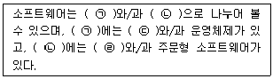
- ㉠ 응용소프트웨어, ㉡ 시스템소프트웨어, ㉢ 유틸리티, ㉣ 패키지
- ㉠ 시스템소프트웨어, ㉡ 응용소프트웨어, ㉢ 유틸리티, ㉣ 패키지
- ㉠ 시스템소프트웨어, ㉡ 유틸리티, ㉢ 응용소프트웨어, ㉣ 패키지
- ㉠ 응용소프트웨어, ㉡ 시스템소프트웨어, ㉢ 패키지, ㉣ 유틸리티
(정답률: 75%)
84. CPU가 명령문을 수행하는 순서는?
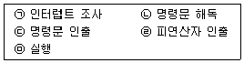
- ㉢-㉠-㉡-㉣-㉤
- ㉢-㉡-㉣-㉤-㉠
- ㉡-㉢-㉣-㉤-㉠
- ㉣-㉢-㉡-㉤-㉠
(정답률: 62%)
85. 다음 문장에서 설명하는 운영체제의 유형은?
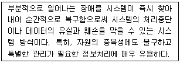
- 시분할 시스템(Time-sharing System)
- 다중 처리(Multi-processing)
- 다중 프로그래밍(Multi-programming)
- 결함허용 시스템(Fault-tolerant System)
(정답률: 66%)
86. 다음 중 사용자가 단말기에서 여러 프로그램을 동시에 실행시키는 기법은?
- 스풀링(Spooling)
- 다중 프로그래밍(Multi-programming)
- 다중 처리기(Multi-processor)
- 다중 테스킹(Multi-tasking)
(정답률: 61%)
87. 8비트에 저장된 값 10010111을 16비트로 확장한 결과값은? (단, 가장 왼쪽의 비트는 부호(Sign)를 나타낸다.)
- 0000000010010111
- 1000000010010111
- 1001011100000000
- 1111111110010111
(정답률: 60%)
88. 다음 중 마이크로프로그램에 의한 마이크로 오퍼레이션동작으로 틀린 것은?
- 주기억 장치에서 명령어 인출하는 동작
- 오퍼랜드의 유효 주소를 계산하는 동작
- 지정된 연산을 수행하는 동작
- 다음 단계의 주소를 결정하는 동작
(정답률: 61%)
89. 다음 지문에서 설명하고 있는 소프트웨어의 종류는?
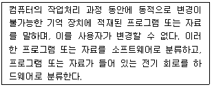
- 펌웨어
- 시스템 소프트웨어
- 응용 소프트웨어
- 디바이스 드라이버
(정답률: 73%)
90. 주소영역(Address Space)이 1[GB]인 컴퓨터가 있다. 이 컴퓨터의 MAR(Memory Address Register)의 크기는 얼마인가?
- 30[bit]
- 30[Byte]
- 32[bit]
- 32[Byte]
(정답률: 55%)
91. 다음 중 정보통신공사업의 운영에 대한 설명으로 옳지 않은 것은?
- 공사업을 양도할 수 있다.
- 공사업자인 법인 간에 합병할 수 있다.
- 공사업자인 법인을 분할하여 설립할 수 있다.
- 합병에 의하여 설립된 법인은 소명되는 법인의 지위를 승계하지 못한다.
(정답률: 80%)
92. 다음 중 과학기술정보통신부장관이 전기통신번호 관리계획을 수립·시행하는 목적으로 볼 수 없는 것은?
- 전기통신역무의 효율적인 제공을 위하여
- 통신기술인력의 양성사업을 지원하기 위하여
- 이용자의 편익을 위하여
- 전기통신사업자간의 공정한 경쟁환경의 조성을 위하여
(정답률: 74%)
93. 다음 중 정보통신공사업법에서 규정하는 '하도급'에 대한 설명으로 옳은 것은?
- 도급받은 공사의 전부에 대하여 수급인이 제3자와 체결하는 계약을 말한다.
- 도급받은 공사의 일부에 대하여 하도급인이 제3자와 체결하는 계약을 말한다.
- 도급받은 공사의 일부에 대하여 수급인이 제3자와 체결하는 계약을 말한다.
- 도급받은 공사의 전부에 대하여 하도급인이 제3자와 체결하는 계약을 말한다.
(정답률: 73%)
94. 다음 중 구내통신선로설비의 설치 및 철거 방법으로 잘못된 것은?
- 구내에 5회선 이상의 국선을 인입하는 경우 옥외회선은 지하로 인입한다.
- 사업자는 이용약관에 따라 체결된 서비스 이용계약이 해지된 경우에는 설치된 옥외회선을 철거하여야 한다.
- 배관시설은 설치된 후 배선의 교체 및 증설시공이 쉽게 이루어 질 수 있는 구조로 설치하여야 한다.
- 인입맨홀·핸드홀 또는 인입주까지 지하인입배관을 설치한 경우에는 지하로 인입하지 않아도 된다.
(정답률: 81%)
95. 다음 중 정보통신공사업자의 시공능력평가에 포함되지 않는 사항은?
- 경영진평가
- 자본금평가
- 기술력평가
- 경력평가
(정답률: 65%)
96. 방송통신설비의 제거명령을 위반한 자에 대한 벌금규정은?
- 1년 이하의 징역 또는 1천만원 이하의 벌금에 처한다.
- 2년 이하의 징역 또는 2천만원 이하의 벌금에 처한다.
- 3년 이하의 징역 또는 3천만원 이하의 벌금에 처한다.
- 5년 이하의 징역 또는 5천만원 이하의 벌금에 처한다.
(정답률: 83%)
97. 다음 중 정보통신공사의 설계 및 시공에 관한 설명으로 틀린것은?
- 공사를 설계하는 자는 기술기준에 적합하도록 설계하여야 한다.
- 설계도서를 작성하는 자는 그 설계도서에 서명 또는 기명날인 하여야 한다.
- 감리원은 설계도서 및 관련 규정에 적합하도록 공사를 감리하여야 한다.
- 공사를 감리한 용역업자는 그가 감리한 공사의 준공설계도서를 준공 후 5년간 보관하여야 한다.
(정답률: 84%)
98. 방송통신설비에 사용되는 전원설비는 동작전압과 전류의 변동률을 정격전압 및 정격전류의 얼마 이내로 유지할 수 있어야 하는가?
- ±10[%]
- ±15[%]
- ±20[%]
- ±25[%]
(정답률: 71%)
99. 다음 중 정보통신공사업을 경영하려는 자는 누구에게 등록을 하여야 하는가?
- 한국정보통신공사협회장
- 국립전파연구원장
- 과학기술정보통신부장관
- 시·도지사
(정답률: 59%)
100. 다음 중 '광대역통합정보통신기반'의 용어 정의로 알맞은 것은?
- 통신·방송·인터넷이 융합된 멀티미디어 서비스를 언제 어디서나 고속·대용량으로 이요할 수 있는 정보통신망을 말한다.
- 실시간으로 동영상 정보를 주고 받을 수 있는 고속·대용량의 종합정보통신망과 이와 관련된 기술 및 서비스 내용 들을 말한다.
- 광대역통합정보통신망과 이에 접속되어 이용되는 정보통신기기 소프트웨어 및 데이터베이스 등을 말한다.
- 모든 정보통신망을 이용하여 정보를 생산, 유통, 활용의 효율화를 도모하기 위한 모든 종류의 자료와 지식, 활동 등을 말한다.
(정답률: 53%)